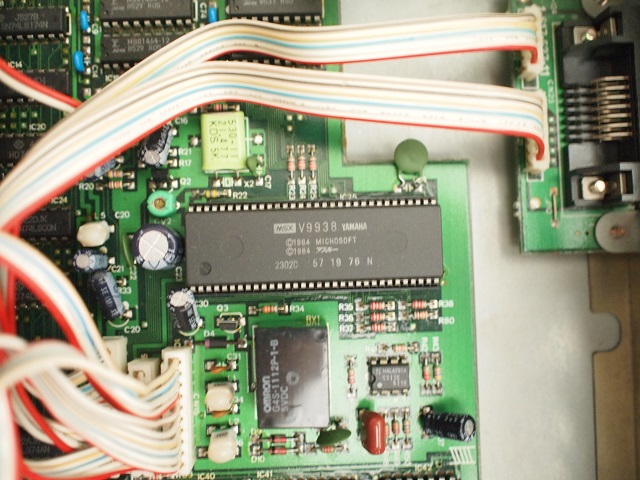
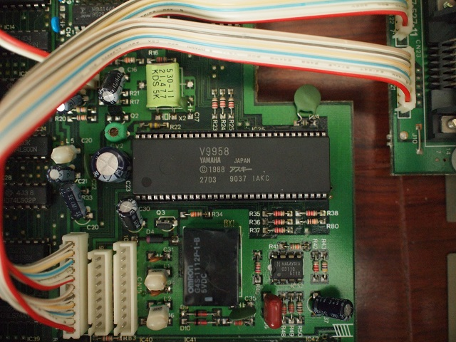
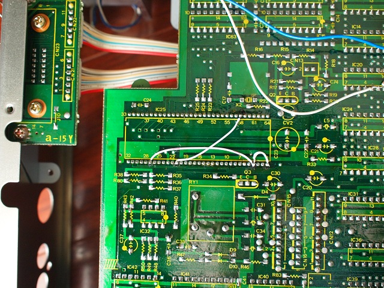
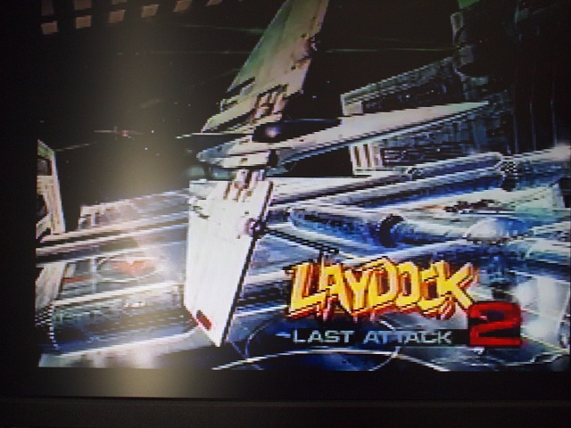
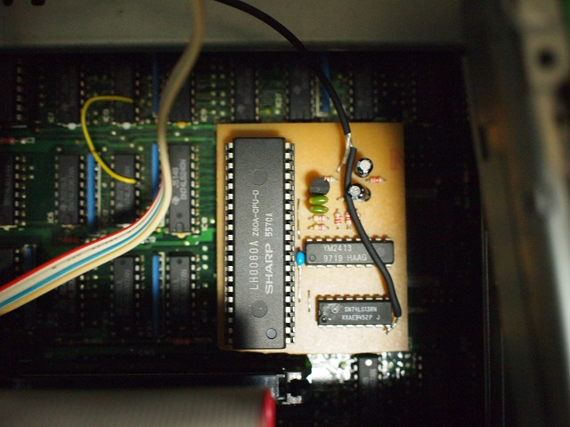

LAYDOCK2の秘密
MSX2+専用として発売されたLAYDOCK2。MSX2+で標準実装された自然画モード、横スクロールを使用したシューティングゲームですが、MSX2+かどうかの判定をしておらずMSX2でも動作してしまうとのこと。
まぁ、有名と言えば有名な話で今更という方もいるかも多いかも知れません。と、言うことで今回は特別に検証を・・・。
こちらに中古で入手したMSX2があります。主要なチップがソケットに載っているので改造にうってつけ？VDPは当然V9938。

それをeBayで1,000円程度で購入出来るV9958に載せ替えてみます。

それだけでは駄目らしく、海外のサイトを参考に配線を追加。

V9958の1ピンと4ピンと27ピンを接続。
V9958の21ピンと58ピンを接続
他に写っている配線は中古で購入したときから付いていた謎のスイッチなので無視してください。
本当にこれだけで動くのだろうか・・・と思いつつ電源を入れると・・・

見事に自然画モードで表示されました。VictorのHC95も時期によってはV9958を搭載しているという噂がありましたが、それでも動くのでしょう。
海外のサイトを参考に適当に真似ただけなので、壊れないかちょっと不安で今更データシートを見て確認(^-^; ピンの違いは大体以下の様になっていました。
| ピン番号 |
V9938 |
V9958 |
HB-F500 |
| 1ピン |
GND (I) |
GND (I) |
当然GND |
| 58ピン |
VDD (I) |
VDD (I) |
VDD |
| 4ピン |
/VDS (O) |
/VRESET (I) |
N.C.っぽい |
| 8ピン |
CPUCLK (O) |
CPUCLK//VDS (O) |
当然CPUCLK |
| 27ピン |
/LPD (I) |
/HRESET (I) |
N.C.っぽい |
| 21ピン |
VIDEO (O) |
VDD (I) |
N.C.っぽい |
| 26ピン |
/LPS (I) |
WAIT (O) |
N.C.っぽい |
-
1ピン(GND)と58ピン(VDD)はV9938とV9958で同じです。
-
V9938の4ピン(/VDS)は"VRAM Data Select"・・・よく分かりませんが、V9958では8ピン(CPUCLK//VDS)に統合されV9938同様CPUCLKとして使われているようなので要らない信号なのでしょう。出力信号なので、一応どこにもつながっていないことを確認してましょう。V9958では/VRESETになっています。VSYNCのInputらしいですが、A1WXではVDDにつながっていて使われていない模様。デジタイザ内蔵機で使われるのかも知れません。実際につなげるのは1ピン(GND)でも58ピン(VDD)でも良さげです。
-
V9938の27ピン(/LPD)は"Light Pen Detection input or mouse SW input"、V9958では無くなった信号でライトペンサポートの機種では使われているのかも知れません。使われていない場合、VDDにつなげることが推奨されているようです。V9958では/HRESETになっています。HSYNCのInputらしいですが、A1WXではVDDにつながっていて使われていない模様。デジタイザ内蔵機で使われるのかも知れません。V9938の回路でVDDとつながっていると仮定すると・・・58ピン(VDD)につなげた方が良さげです。
-
V9938の21ピン(VIDEO)はコンポジット出力のようですが、V9958では無くなっており外部回路でコンポジット出力を作っています。MSX2ではこの21ピン(VIDEO)がそのまま出力に使われているのかも知れません。私はRGB出力を使うので気にしませんが・・・改造前にこの信号がどこかにつながっていないか確認した方が良さそうです。V9958ではVDDとなっていますので、58ピン(VDD)につなげます。
-
V9938の26ピン(/LPS)は"Light Pen or mouse SW input"、27ピン(/LPD)と同様にV9958では無くなった信号でライトペンサポートの機種では使われているのかも知れません。使われていない場合、VDDにつなげることが推奨されているようです。V9958では/WAITになっており、A1WXの回路図ではOpenになっています。出力ピンなのであまり問題ないと思いますが、VDDやGNDに直接つながっていないことを確認しておいた方が良いかも知れません。
HB-F500ではソケットがあるのが逆に災いし、どこにつながっているのかパターンを追えず・・・。VDDやGNDとの間の抵抗値が大きい（数MΩ）ので単純にプルアップもしくはプルダウンされている感じでは無いことくらいは分かるのですが。
ついでにヤフオクで売られていたFM音源の基板をつけてみます。FM音源はIOアクセスなのでCPUの信号があれば済み、CPUと基板の間に取り付けるようです。CPUはソケットに付いていたのですが、FM音源の基板の足がソケットに入る物では無かったので少々苦労しましたが何とか取り付けました。CPUの上に直接半田付けした方が楽だったかも知れません。サウンドラインは単線ではノイズが載るのでシールド線に取り替えています。

IOアクセスと言っても載せるだけではソフト側がFM音源を認識しません。今回は壊れて音がでないFM-PACをスロットに挿して音が出ることを確認しましたが、将来的にはROMを用意するかも？ROMといっても拡張BIOSが不要でゲーム等で使うだけなら単に4018hに"APRLOPLL"の文字列をおくだけです。
お約束ですが、この噂を見て改造などを行い故障やその他問題が発生しても責任は負えません。各自の責任において情報を広く集めて行うことをおすすめします。